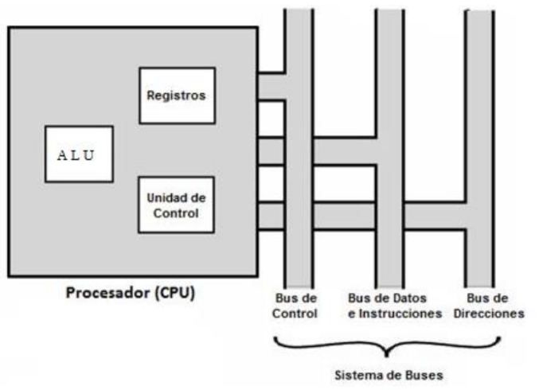
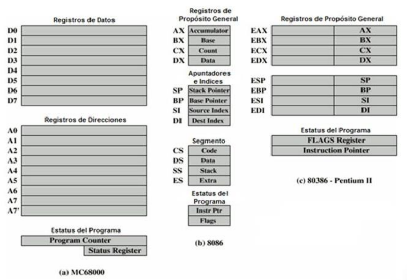

Los registros que encuentran dentro de cada procesador su
función principales almacenar los valores de cada uno de los
datos,comandos,instrucciones o estados binarios que son los
que ordenan qué dato debe procesarse, así como la forma en
la que se debe realizar.
Un registro no deja de ser una memoria de velocidad alta y
con poca capacidad.
Cada registro puede contener una instrucción, una dirección
de almacenamiento o cualquier tipo de dato.
En un procesador encontramos espacios con una capacidad
que oscila entre 4 y 64 bits porque cada registro debe tener un
tamaño suficiente para contener una instrucción. En el caso de
que un ordenador de 64 bit, cada registro de tener un tamaño
de 64 bits.
Cada procesador tiene varias asignaciones o tareas que debe
de realizar para el manejo de la información.
La información es recibida generalmente en código binario,
procedente de las aplicaciones para, después, procesarlos de
una forma determinada.
Digamos que el procesador traduce esos datos para que
nosotros, los usuarios, los entendamos.
Dentro de un microprocesador encontramos el registro de
información, cuya función es guardar de forma temporal los
datos a los que se accede frecuentemente.

Tipos de registros
Los registros del procesador se dividen o clasifican
atendiendo al propósito que sirven o a las instrucciones que
les ordenan.
Registros de datos.
Guardan valores de datos numéricos, como son los
caracteres o pequeñas órdenes.
Los procesadores antiguos tenían un registro especial de
datos: el acumulador, el cual era usado para operaciones
determinadas.
Registro de datos de memoria (MDR).
Es un registro que se encuentra en el procesador y que está
conectado al bus de datos. Tiene poca capacidad y una
velocidad alta por la que escribe o lee los datos del bus que
van dirigidos a la memoria o al puerto E/S, es decir, un
periférico.
Registros de direcciones.
Guardan direcciones que son usadas para acceder a la
memoria principal o primaria, que solemos conocer como
ROM o RAM. En este sentido, podemos ver procesadores con
registros que se usan solo para guardar direcciones o valores
numéricos.
Registros de propósito general (GPRs).
Son registros que sirven para almacenar direcciones o datos
generales. Se trata de una especie de registros mixtos que,
como su propio indica, no tienen una función específica.
Registros de propósito específico (SPRs).
En esta ocasión, estamos ante registros que guardan datos del
estado del sistema, como puede ser el registro de estado o el
instruction pointer.
Registros de estado.
Sirven para guardar valores reales cuya función es determinar
cuándo una instrucción debe ejecutarse o no.
También se le conoce como CCR (Condition Code Register).
Dentro de este tipo de registros, encontramos el siguiente:
Registro de bandera o “FLAGS“.
Lo encontramos en los procesadores Intel con
arquitectura X86. Estamos ante un registro con 16 bits de
ancho. Pero, tiene 2 sucesores:
EFLAGS, con 32 bits de ancho.
RFLAGS, con 64 bits de ancho.
Registros de coma flotante.
La coma flotante es una representación, en forma de fórmula,
de números reales de distintos tamaños que sirve para realizar
operaciones aritméticas. Nos encontraremos con ella en
sistemas que requieren sistemas de procesados muy rápidos.
Por tanto, estos registros guardan estas representaciones en
muchísimas arquitecturas.
Registros constantes.
Su cometido es guardar valores de sólo lectura como son el
0, 1 ó π.
Organización de registros en algunos Procesadores
